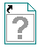

The Static VI Reference function is not currently linked to a VI.
To correct this error, right-click the Static VI Reference function and select Browse for Path from the shortcut menu. Select a VI in memory on your computer. When you replace the Static VI Reference function with a VI in memory, the icon changes to match the VI you selected.